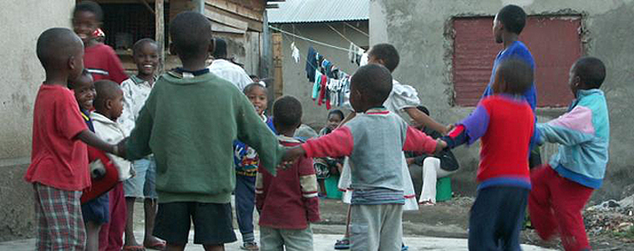

OPEN AID PARTNERSHIP
THE PARTNERSHIP
THE PARTNERSHIP

The Open Aid Partnership is a collaboration between the governments of Bolivia, Canada, Czech Republic, Estonia, Finland, Kenya, Malawi, Nepal, the Netherlands, Spain, Sweden, the United Kingdom, as well as African Development Bank, Akvo, the Foundation Center, InterAction, ONE, Publish What You Fund, UN-Habitat and the World Bank Group.
The Open Aid Partnership will use a phased approach to implement its activities:
- Phase I: In the first phase, the Partnership will focus on working closely with donors and partner countries to develop an integrated Open Aid Map (Component 1) and to support the capacity of partner countries to better manage aid flows by supporting them in developing country-owned open aid mapping platforms (Component 2). Furthermore, the Partnership will develop strategic partnerships with civil society organizations to act as "information intermediaries" at the local level and to strengthen the capacity of grassroots organizations and citizens in the use of open aid data (Component 3).
- Phase II: In a second phase, the Partnership will promote innovative uses of ICTs, including crowd-sourcing, SMS and social media, to support the closing of feedback loops between citizens, implementing agencies and donors (Component 4). The Partnership will also support evaluations of the development impact of innovative uses of ICTs and the development of geo-enabled and open mapping country platforms in order to better understand the programs effects on enhancing poor people's well-being through improvements in aid coordination and transparency (Component 5).